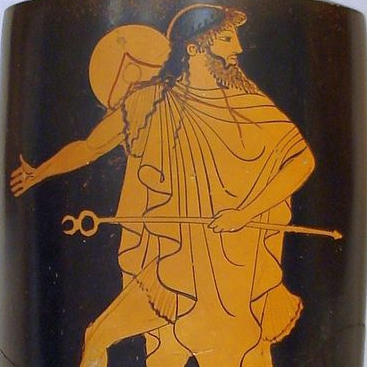
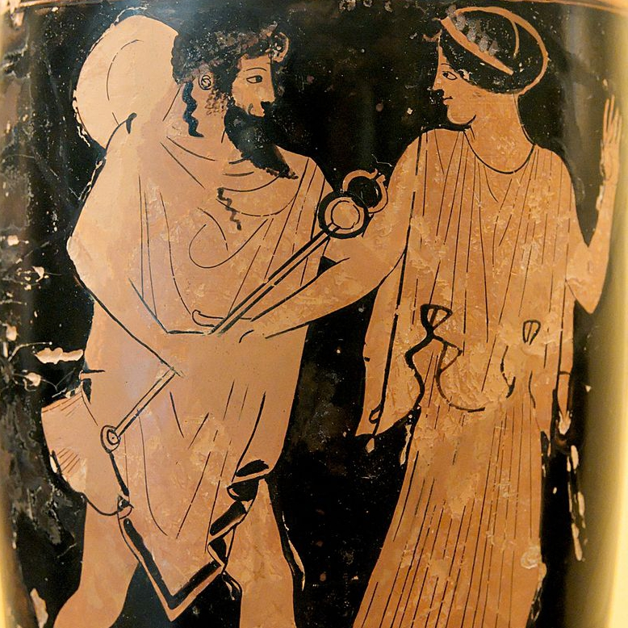
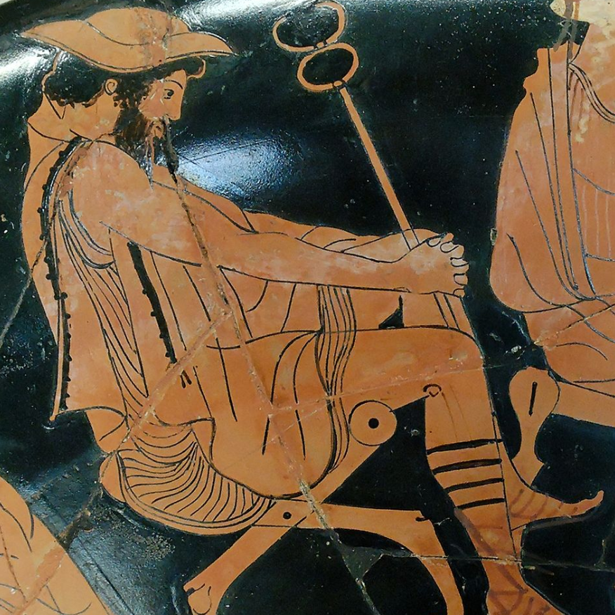

PSYCHOPOMP is a game about guiding your past trauma to a final resting place. You act as the guide to your trauma through levels of grief, fear, and rage, until you finally reach the realm of understanding and acceptance.
Like spirits, the experiences that you carry are parts of you that have died. Like when you die, you cannot change what has happened to you. Rather, you can only accept its fated arrival and be guided to a final place of rest. Understand that it may not be an easy journey or responsibility to bear, but rather a necessary one.
A psychopomp is a guide of souls to the world of the dead. In PSYCHOPOMP, you play as who we conceive of as "the ferryman" guiding a newly deceased spirit to the eternal afterlife. You will face challenges on your journey, as the realm is inhabited by many. But do not fear, the ferryman is an experienced traveller, and they have walked this road many times before.
A keyboard and mouse/trackpad are needed to play this game. Use WASD to move the ferryman. Use left mouse button to attack. Use SHIFT to sprint.
At times, there may be nothing to attack. Defend yourself only when necessary, as you are but the guide of this realm. Be kind to its inhabitants, even if they may not want to be disturbed.
The goal is not to win, but to complete what you came here to do.
Definition of psychopomp on title screen cited from Oxford Reference
landing page / end page - Протон 4 – Время Жить [Proton 4 - Time to Live] (via 1 Hour Of Melancholic Sovietwave via Truckfighter, posted Aug. 1, 2019).
depression - Маяк – Река [Lighthouse - River] (via 1 Hour Of Melancholic Sovietwave via Truckfighter, posted Aug. 1, 2019).
anxiety - Маяк – Иллюзииme [Lighthouse - Illusions] (via 1 Hour Of Melancholic Sovietwave via Truckfighter, posted Aug. 1, 2019).
rage - Артек Электроника – Шагая Сквозь Эпоху [Artek Electronics - Stepping Through the Age] (via 1 Hour Of Melancholic Sovietwave via Truckfighter, posted Aug. 1, 2019).
ferryman's inspiration derived from ancient greek vase depictions of hermes wearing a petasos (travelling hat) and chlamys (cloak)
|  |  |  |
|---|---|---|
|
Lekythos depicting Hermes wearing a chlamys and petasos and bearing a kerykeion. Greek, Attic, c. 480-470 BC. Red figure. Attributed to the Tithonos Painter.
|
Hermes pursuing a woman, probably Herse. Attic red-figure amphora, ca. 470 BC. |
Hermes (easily identified by his petasus and caduceus), detail from a scene representing the embassy of Odysseus to Achilles (Book 9 of the Iliad). Attic red-figure cup, ca. 480 BC–470 BC. From Vulci. |
title of "ferryman" inspired by ancient greek figure charon, ferryman of the dead.